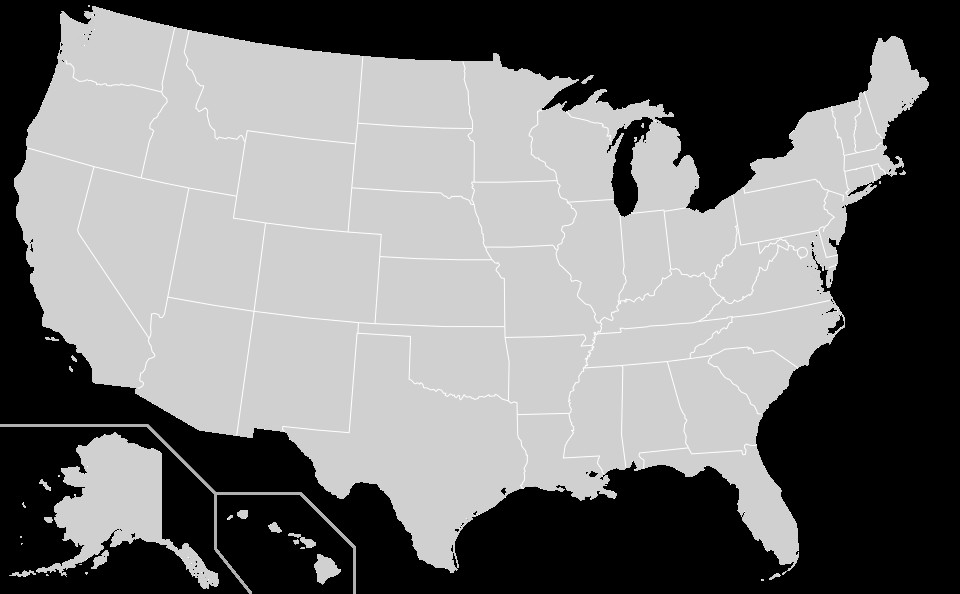

Maple
I frequently use Maple, more specifically the q-series and subsidiary packages developed by Frank Garvan, to perform computations involving partitions and q-series. Below is a collection of related files where I search and find identities for partition and overpartition objects and statistics using automorphic-algorithmic techniques in Maple. I have also prepared an installation guide for these packages that are available for download at Frank Garvan's UF homepage.
Frank Garvan's QSERIES package : This link takes one to Frank Garvan's webpage containing his QSERIES and other related
packages such as RANK and CRANK for installation and use. Each package comes with a tutorial.
QSERIES package installation guide : This pdf serves as a guide to install his packages. Of course, one needs to have a Maple
license bought and installed first.
Partition crank identities : This takes one to Maple files containing codes to finding and proving partition crank
identities modulo higher primes in terms of generalized eta products with cyclotomic coefficients. It is a part
of my paper "Transformation and symmetries for the Andrews–Garvan crank function
, Hardy–Ramanujan J. 47 (2024), 1–25".
Notes/Reading
Frank Garvan's reading course on Partitions and q-series
Frank Garvan's reading course on Modular functions
Ramanujan's papers and notebooks
Zwegers' thesis "Mock theta functions"
Useful pages
The Number Theory Web : A collection of links to online information of interest to number theorists
MathMeetings.net : a list for research mathematics conferences, workshops, summer schools, etc.
Postdoc application opportunities : mathjobs.org, euromathsoc.org,
Travel
I love to travel. Visiting national parks and taking road trips are my favorite. Clicking on a state in the map below will take you to a picture of myself from when I visited the place (18 states and counting).
